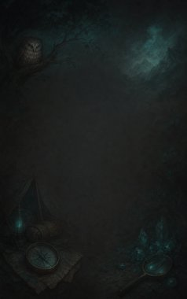
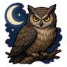
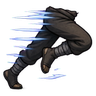
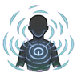
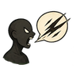
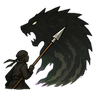
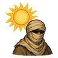
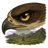
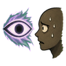
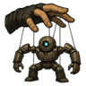

Deepsight D
D-rank passive. Keen senses in the dark.

Technique trees › Skills and beast arts
12 techniques · Ninjutsu tab
Learned from technique scrolls, mission rewards, written scrolls and scroll merchants; some NPC ninja know it. It counts toward the ninja build like other trees.
D-rank passive. Keen senses in the dark.

D-rank passive. Needs little sleep.
C-rank passive. Unusual good luck.

B-rank passive. Moves faster than normal.

C-rank. Feel chakra around you: the fog lifts.
| Rank | Chakra | Cooldown | Class level |
|---|---|---|---|
| C | 20 | 15 s | 5 |

B-rank. A remark so cruel it actually wounds one enemy.
| Rank | Chakra | Cooldown | Class level |
|---|---|---|---|
| B | 35 | 15 s | 9 |

B-rank passive. At your best against large creatures.

B-rank passive. Hardened against heat and hunger.
B-rank passive. Naturally gifted at everything.

B-rank passive. Picks out targets from far away.

C-rank passive. Knows a lie when it hears one.

A-rank. Seize control of a construct: one enemy machine is stunned for a long while.
| Rank | Chakra | Cooldown | Class level |
|---|---|---|---|
| A | 55 | 50 s | 13 |